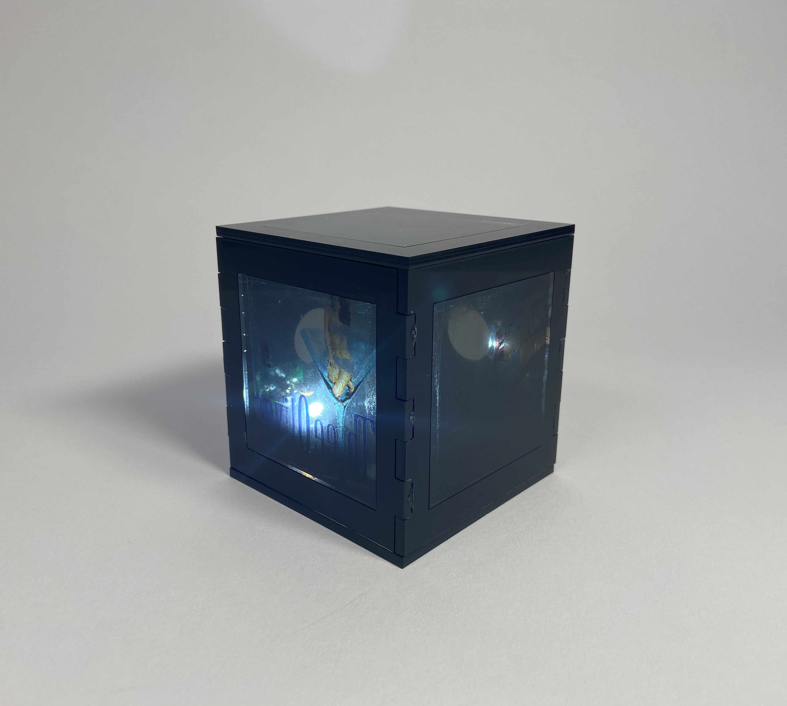
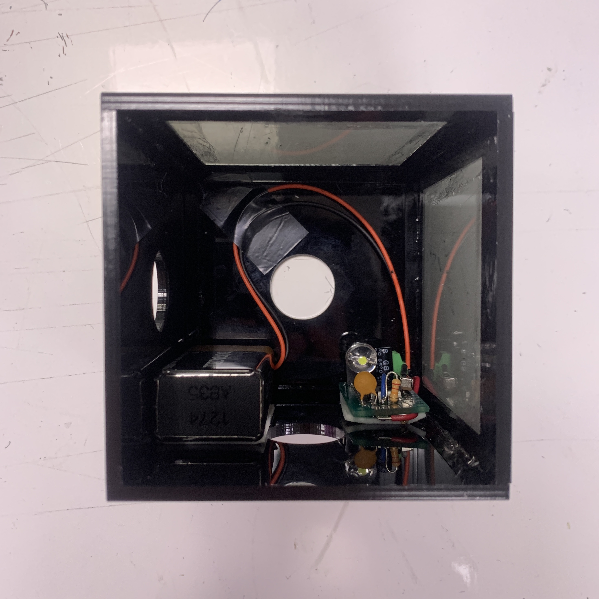
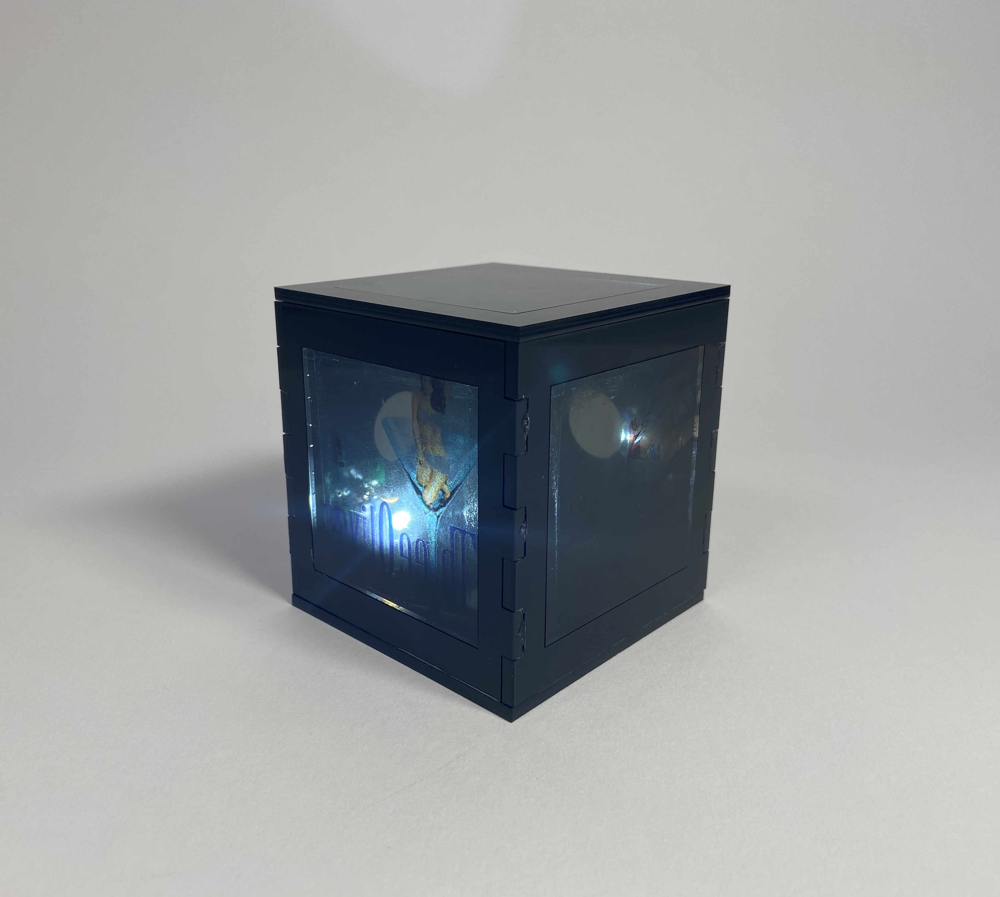
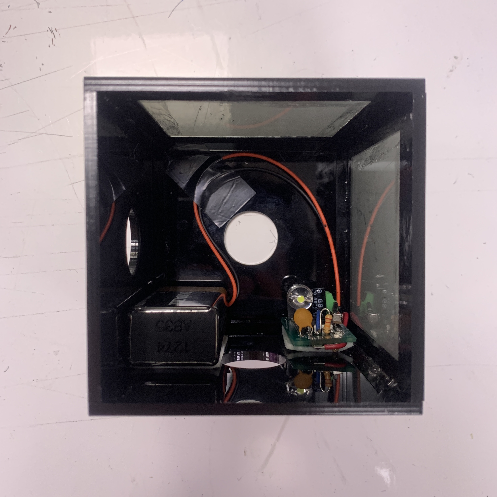
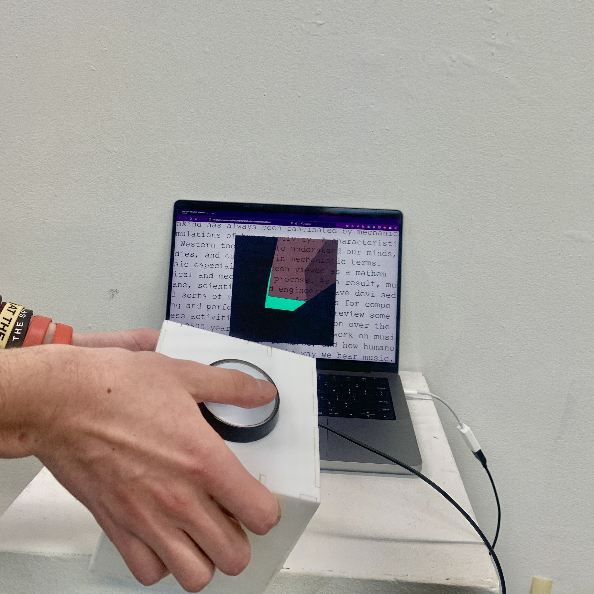
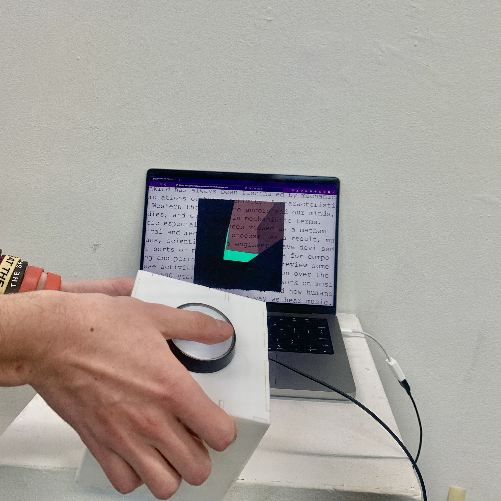
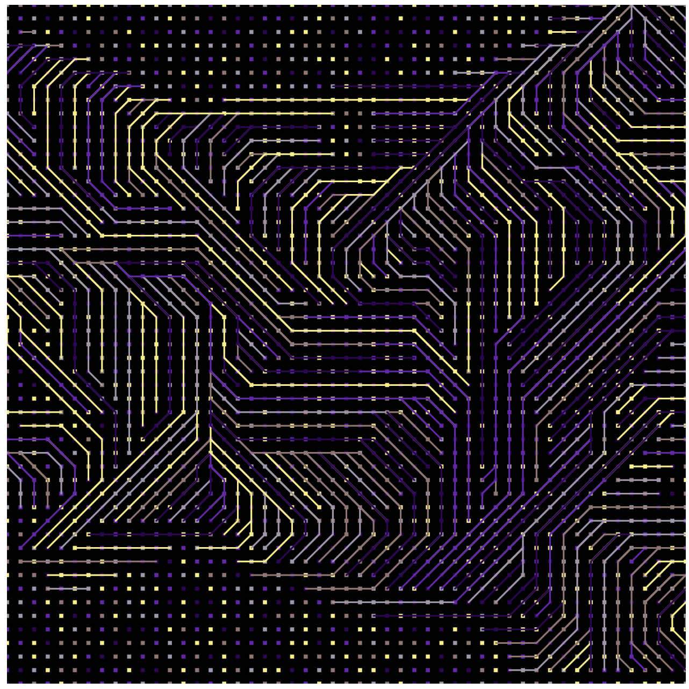
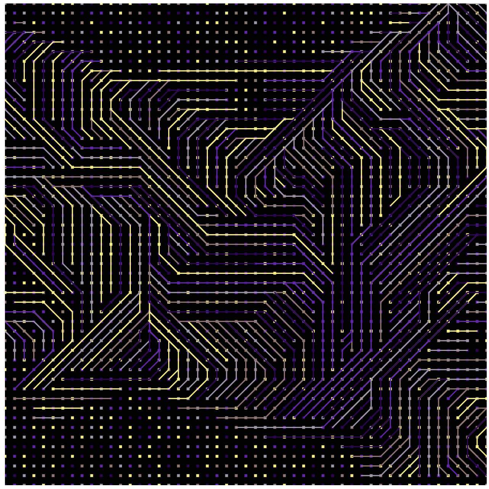
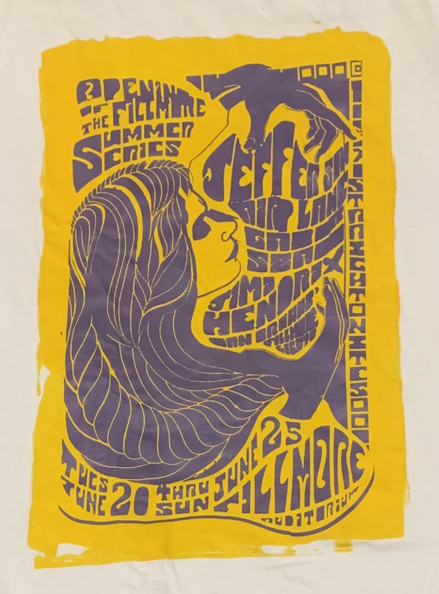
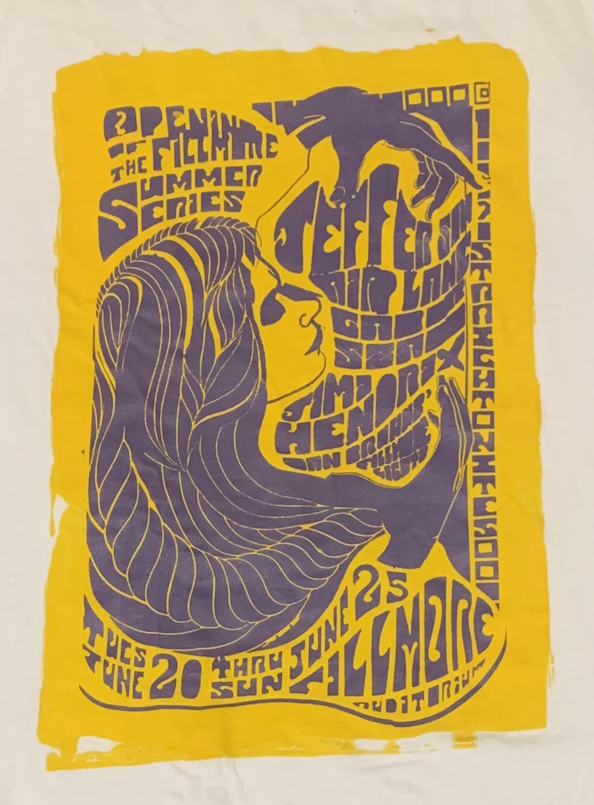

this box will make you sexy
Modern advertising is designed to catch our eye and trap us in a reality inaccessible to the real person. While attempting to sell a product as fast as possible, advertisers rely on pitching us an alternate reality in which hamburgers aren’t bought because they fill our hunger but because they make us sexy, and cars don’t take us from place to place, they give us freedom. We’ve designed a piece to shed a light on these tactics by showing users the non-sencible nature of these advertising claims, and forcing them to slow down their vision and look at advertising in the context of their real lives.
waves
wooden toy
Wooden toy that uses a hand-cranked cam shaft to lower and raise the waves. The waves are laser cut out of one flat sheet using a living hinge - notice in the top view that there is no additionally hardware to make the 'waves' go up and down, they can be dropped into the assembly straight out of the laser cutter.
 

soundbox
interactive toy
What does is mean for music to be 'correct'? It is widely discussed and understood in intellectual musical circles that much of what we call music theory is rooted in the Shankerian model, which was designed to glorify the preferences of 18th century whites while those of other musical cultures. This said, nothing significant is done in order to break with this racist model in early childhood musical education, which conditions us to classify music as right and wrong. Musical toys rarely if ever break even the most basic Shankerian assumptions of 12 tone equal temperament.
Plastiscene
Mixed Media Installation
Collaboration with Tara de la Graza
Where do our private lives end, and public ones begin? Many of us claim to care about topics like environmental justice and climate action in public, but fail to take action when in the comfort of our own home. Plastiscene is made up of many components that resemble household objects - lamps, stools, coffee tables, etc. - and reconstructs them out of a combination of found waste, concrete, and organic materials. The installation juxtaposes of the warm interior that the pieces construct, with the bleak coldness of where the components were taken from. This contrast is something that is often masked in design, as we avoid thinking about where our material goods come from and what their effects are, in place of the use value we get from them.
 

I made this after thinking about inclusive design and the ability of technology to bring us together, but also to drive us apart. I thought specifically about the possible 'inclusive' futures of transportation: the individualistic one of self driving cars, or the collectivist one of public transportation. Both can be argued as being 'inclusive', but one is inclusive for the sake of profit and individualism, while the other is inclusive for public good and community. I wanted to make a circuit that also looks like a transit map, highlighting the connectivity possible when properly using technology. I think i'll turn this into an interactive poster-like peice sometime like the climate posters I've made.
code
I wanted to try my hand at using parametric curves and perline noise to generate organic forms of simply geometric shapes. I ended up with this program, that plots a sort-of square and uses the output of a noise function as one of the parameters for the parametric equasions. I'd love to use a pen plotter to make prints of these :) Also, the program I wrote accidentally became kind of a general-use noisy parametric equasion plotter, so I hope to make more of these kinds of pieces with it in the future.
code
code
project for 15-104 Computing for Creative Practice
Playing around with image sampling in p5js. All original images are of me, hece the title :)
I really like the second one, would love to make it into a lithography print
Grasshopper + Rhino
Wind chimes visualizing wind patterns in Pittsburgh in winter 2021
Uses a parametric array and attractor curve to 'push' the chimes
Project for Project for Generative Modeling (48-783)
data
Grasshopper + Rhino
Parametric array render, I want to turn this into a sculpture eventually
Project for Project for Generative Modeling (48-783)
 

Resampled Vintage Jefferson Airplane Poster
Model: Callie Rosenbaum
misc
Unlucky
Stencil Painting on Wood
I also made the lamp and mural
in the background :P
飞野牛 (Flying Bison)
Halftone Screen Print
From Avatar, the Last Airbender
Fish
p5 animation, just for fun